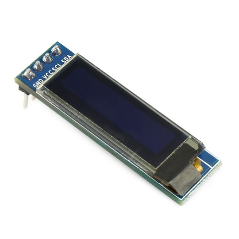
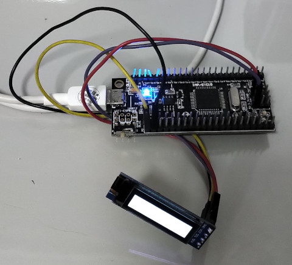

屏

#include "stc15w4k56s4.h"
#define I2C_SDA P01
#define I2C_SCL P00
#define SSD1306_ADDRESS 0x78
#define SSD1306_LCDWIDTH 128
#define SSD1306_LCDHEIGHT 32
#define SSD1306_SETCONTRAST 0x81
#define SSD1306_DISPLAYALLOW_RESUME 0xA4
#define SSD1306_DISPLAYALLOW 0xA5
#define SSD1306_NORMALDISPLAY 0xA6
#define SSD1306_INVERTDISPLAY 0xA7
#define SSD1306_DISPLAYOFF 0xAE
#define SSD1306_DISPLAYON 0xAF
#define SSD1306_SETDISPLAYOFFSET 0xD3
#define SSD1306_SETCOMPINS 0xDA
#define SSD1306_SETVCOMDETECT 0xDB
#define SSD1306_SETDISPLAYCLOCKDIV 0xD5
#define SSD1306_SETPRECHARGE 0xD9
#define SSD1306_SETMULTIPLEX 0xA8
#define SSD1306_SETLOWCOLUMN 0x00
#define SSD1306_SETHIGHCOLUMN 0x10
#define SSD1306_SETSTARTLINE 0x40
#define SSD1306_MEMORYMODE 0x20
#define SSD1306_COLUMNADDR 0x21
#define SSD1306_PAGEADDR 0x22
#define SSD1306_COMSCANINC 0xC0
#define SSD1306_COMSCANDEC 0xC8
#define SSD1306_SEGREMAP 0xA0
#define SSD1306_CHARGEPUMP 0x8D
#define SSD1306_EXTERNALVCC 0x01
#define SSD1306_SWITCHCAPVCC 0x02
void delay(unsigned cnt)
{
while(cnt--) {
}
}
void i2c_start(void)
{
I2C_SDA = 1;
I2C_SCL = 1;
delay(10);
I2C_SDA = 0;
delay(10);
I2C_SCL = 0;
}
void i2c_stop(void)
{
delay(10);
I2C_SDA = 0;
delay(10);
I2C_SCL = 1;
delay(10);
I2C_SDA = 1;
}
unsigned char i2c_write(unsigned char val)
{
unsigned char i = 9;
unsigned char ack = 0;
while (--i) {
delay(10);
I2C_SDA = (val & 0x80) ? 1 : 0;
delay(10);
I2C_SCL = 1;
delay(10);
val <<= 1;
I2C_SCL = 0;
}
delay(10);
I2C_SDA = 1;
delay(10);
I2C_SCL = 1;
delay(10);
ack = I2C_SDA;
delay(10);
I2C_SCL = 0;
return ack;
}
unsigned char i2c_read(unsigned char ack)
{
unsigned char i = 9;
unsigned char val = 0;
while (--i) {
val <<= 1;
delay(10);
I2C_SCL = 1;
delay(10);
val |= I2C_SDA;
delay(10);
I2C_SCL = 0;
}
delay(10);
I2C_SDA = ack;
delay(10);
I2C_SCL = 1;
delay(10);
I2C_SCL = 0;
return val;
}
void i2c_write_byte(unsigned char saddr, unsigned char raddr, unsigned char val)
{
unsigned char i = 10;
while (--i) {
i2c_start();
if (i2c_write(saddr)) {
continue;
}
if (i2c_write(raddr)) {
continue;
}
if (i2c_write(val)) {
continue;
}
i2c_stop();
break;
}
}
unsigned char i2c_read_byte(unsigned char saddr, unsigned char raddr)
{
unsigned char i = 10;
unsigned char value = 0;
while (--i) {
i2c_start();
if (i2c_write(saddr & 0xfe)) {
continue;
}
if (i2c_write(raddr)) {
continue;
}
i2c_start();
if (i2c_write(saddr | 1)) {
continue;
}
value = i2c_read(1);
i2c_stop();
break;
}
return value;
}
void gpio_init(void)
{
P0M0 = 0x00;
P0M1 = 0x00;
P1M0 = 0x00;
P1M1 = 0x00;
P2M0 = 0x00;
P2M1 = 0x00;
P3M0 = 0x00;
P3M1 = 0x00;
P4M0 = 0x00;
P4M1 = 0x00;
}
void ssd1306_cmd(unsigned char c)
{
i2c_start();
i2c_write(SSD1306_ADDRESS);
i2c_write(0x00);
i2c_write(c);
i2c_stop();
}
void ssd1306_data(unsigned char c)
{
i2c_start();
i2c_write(SSD1306_ADDRESS);
i2c_write(0x40);
i2c_write(c);
i2c_stop();
}
void ssd1306_init(void)
{
ssd1306_cmd(SSD1306_DISPLAYOFF);
ssd1306_cmd(SSD1306_SETDISPLAYCLOCKDIV);
ssd1306_cmd(0x80);
ssd1306_cmd(SSD1306_SETMULTIPLEX);
ssd1306_cmd(0x1F);
ssd1306_cmd(SSD1306_SETDISPLAYOFFSET);
ssd1306_cmd(0x00);
ssd1306_cmd(SSD1306_SETSTARTLINE);
ssd1306_cmd(SSD1306_CHARGEPUMP);
ssd1306_cmd(0x14);
ssd1306_cmd(SSD1306_MEMORYMODE);
ssd1306_cmd(0x00);
ssd1306_cmd(SSD1306_SEGREMAP | 0x01);
ssd1306_cmd(SSD1306_COMSCANDEC);
ssd1306_cmd(SSD1306_SETCOMPINS);
ssd1306_cmd(0x02);
ssd1306_cmd(SSD1306_SETCONTRAST);
ssd1306_cmd(0x8F);
ssd1306_cmd(SSD1306_SETPRECHARGE);
ssd1306_cmd(0xF1);
ssd1306_cmd(SSD1306_SETVCOMDETECT);
ssd1306_cmd(0x40);
ssd1306_cmd(SSD1306_DISPLAYALLOW_RESUME);
ssd1306_cmd(SSD1306_NORMALDISPLAY);
ssd1306_cmd(SSD1306_DISPLAYON);
}
void ssd1306_set_col_addr(void)
{
ssd1306_cmd(SSD1306_COLUMNADDR);
ssd1306_cmd(0);
ssd1306_cmd(SSD1306_LCDWIDTH-1);
}
void ssd1306_set_page_addr(void)
{
ssd1306_cmd(SSD1306_PAGEADDR);
ssd1306_cmd(0);
ssd1306_cmd((SSD1306_LCDHEIGHT/8)-1);
}
void main(void)
{
unsigned int i = 0;
unsigned int col = 0;
gpio_init();
AUXR |= 0x80;
ssd1306_init();
while (1) {
ssd1306_set_col_addr();
ssd1306_set_page_addr();
i2c_start();
i2c_write(SSD1306_ADDRESS);
i2c_write(0x40);
for (i = 0; i < 512; i++) {
i2c_write(0xff);
}
i2c_stop();
}
}
Makefile
all: sdcc main.c packihx main.ihx > main.hex flash: sudo stcgal -p /dev/ttyO2 -P stc15 -o clock_source=external main.hex clean: rm -rf main.ihx main.lst main.mem main.rst main.lk main.map main.rel main.sym main.hex
完成
